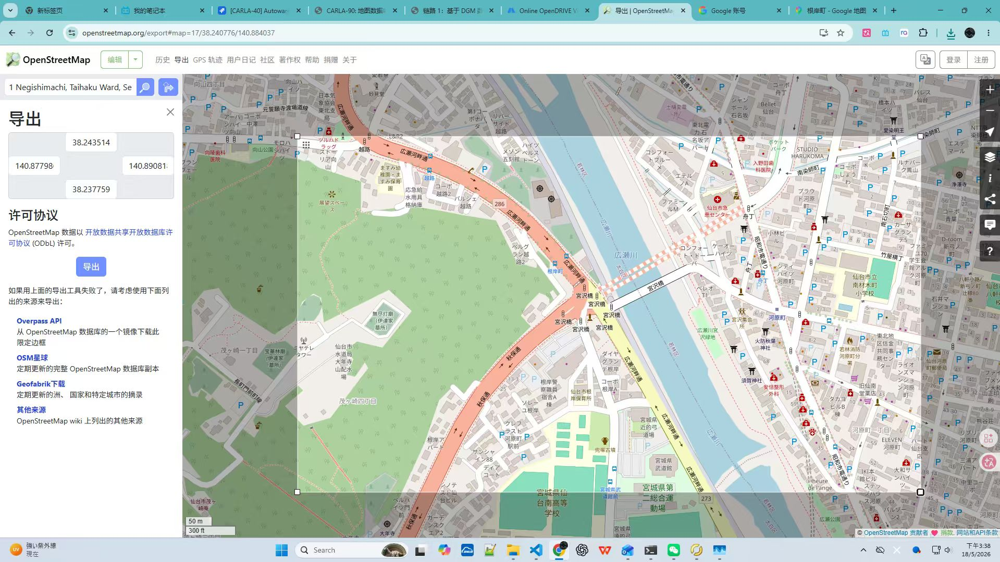
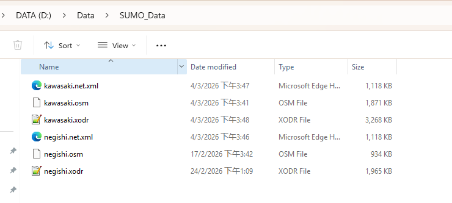
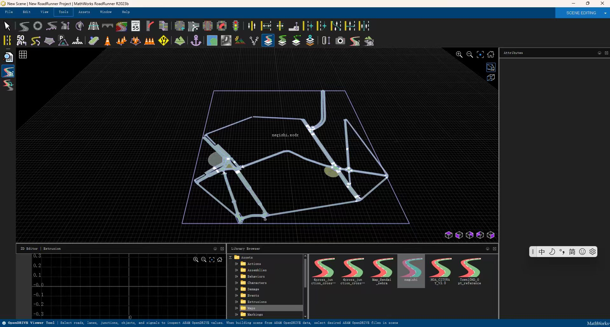

Q: OpenStreetMap サイトから必要なエリアの OSM 地図データをエクスポートする方法は？
A: シミュレーションシーン構築の第一歩として、以下の標準手順で OSM データを取得します。
.osm という拡張子の XML ファイルをダウンロードします。
Q: SUMO の netconvert ツールによる OSM データから OpenDrive への変換結果は？
A: SUMO 変換ツールを用いることで、原始的な OSM セマンティックネットワークをシミュレーターが読み取り可能な OpenDrive 形式に変換可能です。川崎や根岸エリアの変換結果は明確で完全です。

Q: RoadRunner を使用して生成された OpenDrive データを Scene として作成し、FBX 中間形式としてエクスポートするロジックは？
A: RoadRunner のシーン編集環境を通じて、OpenDrive の論理トポロジーを CARLA が利用可能な高性能なシミュレーションアセットへ変換します。
negishi.xodr をインポートすると、3D 路網ロジック図としてレンダリングされ、トポロジーの欠落や接続エラーを直感的に確認できます。